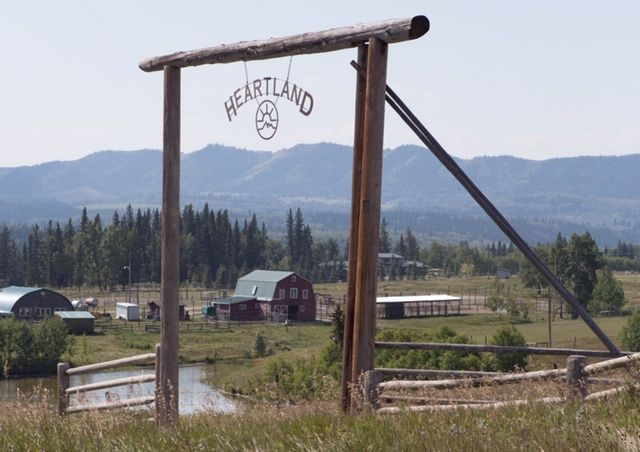

Jack Bartlett

- Actor: Shaun Johnston
- Primera aparición: Temporada 1 (2007)
- Rol: Abuelo de Amy y Lou
- Ocupación: Dueño del rancho Heartland
Jack Bartlett es el pilar de la familia Fleming-Bartlett. Como dueño del rancho Heartland, representa la sabiduría, la paciencia y el amor por la tierra. Es un hombre tradicional, protector y con un corazón enorme, que ha dedicado su vida a mantener unida a su familia y el legado del rancho.
Galería
